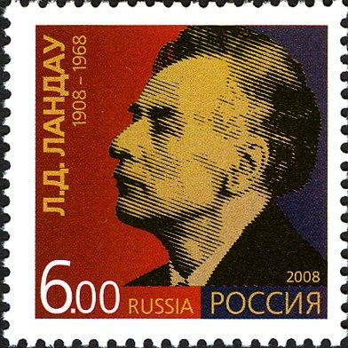
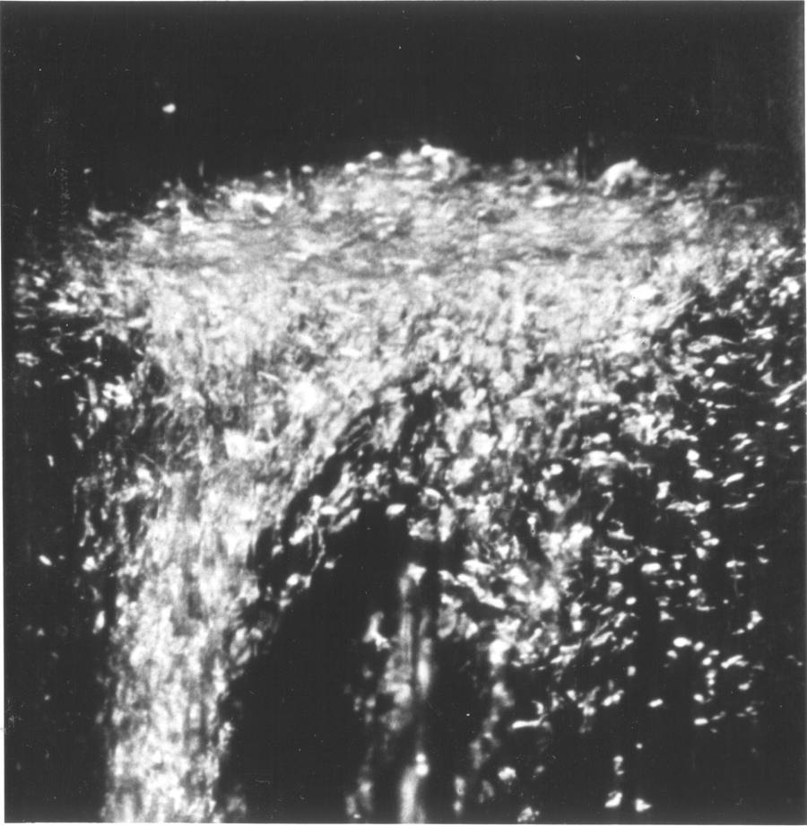

Жидкость, которой нечем тормозить
Читается подряд. Нажми на удар — откроется подробный разбор с источниками.
Лев Ландау родился 22 января 1908 года в Баку.Узнать подробнееСвернуть
Учился в Бакинском и Ленинградском университетах, работал в Кавендишской лаборатории в Кембридже, где познакомился с Петром Капицей. Главным учителем он считал Нильса Бора.

Марка России к 100-летию Л. Д. Ландау, 2008, номинал 6 рублей. Государственный знак почтовой оплаты — общественное достояние. Источники: «Техинсайдер», биография Л. Д. Ландау (techinsider.ru); Электронная еврейская энциклопедия ОРТ, «Ландау Лев» (eleven.co.il).
В январе 1938 года журнал Nature напечатал заметку Петра Капицы: ниже λ-точки жидкий гелий протекает через узкую щель почти без вязкости.Узнать подробнееСвернуть
Опыт поставили в Москве, в Институте физических проблем. Капица хотел измерить, как быстро гелий перетекает через очень узкое отверстие, — и увидел, что при охлаждении гелий вдруг начинает течь с огромной скоростью. Явление назвали сверхтекучестью. В том же номере Nature вышла заметка Джона Аллена и Дона Мизенера из Кембриджа: они нашли то же самое в тонких капиллярах.
Источники: «Forbes», «Две стороны советской науки: почему Капицу не пускали в Кембридж, а Ландау арестовали», 2024 (forbes.ru); P. Kapitza, «Viscosity of Liquid Helium below the λ-Point», Nature 141, 74 (1938); J. F. Allen, A. D. Misener, «Flow of Liquid Helium II», Nature 141, 75 (1938) (nature.com, на английском).
Сверхтекучий гелий тонкой плёнкой ползёт вверх по стенке чашки, перебирается через край и капает со дна, пока чашка не опустеет.Узнать подробнееСвернуть
Это и снято на кадре в начале страницы. Сама плёнка невидима — видно только каплю под дном. Так ведёт себя гелий, у которого нет вязкости.
Источники: описание снимков А. Лейтнера на Wikimedia Commons (на английском); «Forbes», 2024: «сильно охлаждённый жидкий гелий тёк вверх по стенкам сосуда».
Пока гелий кипит, он бурлит пузырями; на λ-точке кипение разом прекращается.Узнать подробнееСвернуть

Гелий, остывающий к λ-точке, на миг вскипает бурно — и затем кипение прекращается. Кадр из фильма А. Лейтнера «Liquid Helium, Superfluid», 1963; общественное достояние. Ландау в 1941 году называл известное тогда значение λ-точки — 2,19 градуса Кельвина. Его собственная оценка по теории дала 2,3 — «в хорошем согласии», как он писал.
Источники: Л. Д. Ландау, «Теория сверхтекучести гелия-II», ЖЭТФ, 1941, перепечатка в УФН, 1967 (ufn.ru), § 5; описание снимка А. Лейтнера на Wikimedia Commons.
28 апреля 1938 года Ландау арестовали, и в тот же день Капица написал письмо Сталину.Узнать подробнееСвернуть
Капица просил «ввиду его исключительной талантливости» отнестись к делу очень внимательно: «утрата Ландау как учёного… не пройдёт незаметно и будет сильно чувствоваться». Капица знал, что объяснять открытую им сверхтекучесть, кроме Ландау, некому.
Источник: «Forbes», 2024 (forbes.ru).
Ровно через год Ландау освободили — и он вернулся в Институт физических проблем.Узнать подробнееСвернуть
Из тюрьмы он вышел истощённым и едва мог ходить, но через несколько недель снова работал. Освобождение историки связывают с вмешательством Капицы. Дело против Ландау официально прекратили только через полвека.
Источники: «Forbes», 2024; Электронная еврейская энциклопедия ОРТ (eleven.co.il); «Техинсайдер» (techinsider.ru).
Венгерский физик Ласло Тисса предлагал считать гелий идеальным газом из атомов-бозонов — Ландау показал, что так сверхтекучести не получится.Узнать подробнееСвернуть
По Тиссе, атомы в основном состоянии движутся через жидкость без трения. Ландау возразил: ничто не помешало бы остальным атомам сталкиваться с ними, и течение тормозилось бы. «Объяснение, предложенное Тиссой, является только кажущимся», — написал он в статье 1941 года, а в сноске показал: идеальный газ не стал бы сверхтекучим ни при какой скорости.
Источник: Л. Д. Ландау, «Теория сверхтекучести гелия-II», ЖЭТФ, 1941 (перепечатка в УФН, 1967, ufn.ru), вступление и § 4; работа Тиссы — по списку литературы статьи: J. Tisza, Nature 141, 913 (1938).
Ландау рассуждал так: тормозить поток могут только порции внутреннего движения, родившиеся у стенки, — звуковые фононы и ротоны.Узнать подробнееСвернуть
Вся жидкость сразу от трения о стенку сдвинуться не может — движение начинается с возбуждения в ближних к стенке слоях. Значит, вопрос о трении сводится к вопросу: может ли такая порция вообще родиться.
Источник: Л. Д. Ландау, 1941, § 4 (ufn.ru).
Ландау показал: пока гелий течёт медленнее определённой скорости, в нём не может родиться ни фонон, ни ротон — и тормозить течению нечем.Узнать подробнееСвернуть
Находка дняВ статье это звучит так: «при неслишком больших скоростях течения в гелии-II не могут возбудиться ни фононы, ни ротоны. Это значит, что течение жидкости не будет замедляться, т. е. гелий обнаружит явление сверхтекучести». Для фононов порог — скорость звука в гелии, 250 метров в секунду; для ротонов, писал Ландау, — «в несколько раз меньше». Он же честно оговорил, что сверхтекучесть может пропасть и раньше «по каким-либо иным причинам».
Источник: Л. Д. Ландау, «Теория сверхтекучести гелия-II», ЖЭТФ 11 (6), 592 (1941); перепечатка: УФН 93, 495 (1967), § 4.
Ниже λ-точки гелий ведёт себя как смесь двух жидкостей — сверхтекучей и нормальной; в λ-точке сверхтекучая часть исчезает.Узнать подробнееСвернуть
Нормальная часть — это «газ» уже родившихся фононов и ротонов, она вязкая и уносит тепло. Сверхтекучая течёт без трения. Чем холоднее, тем меньше нормальной части; у абсолютного нуля остаётся одна сверхтекучая.
Источник: Л. Д. Ландау, 1941, § 5 (ufn.ru).
Из своих уравнений Ландау вывел, что в гелии-II должны существовать две разные скорости звука.Узнать подробнееСвернуть
Скорость «второго звука» потом с большой точностью измерил В. Пешков. Сравнение, писал Ландау, «полностью подтверждает общую картину», но цифры разошлись: при 1,6 К теория давала 25 м/с, опыт — 19 м/с, и Ландау уточнил свою теорию. Статья поступила в редакцию 15 мая 1941 года, вышла в «Журнале экспериментальной и теоретической физики» (т. 11, вып. 6, с. 592) и в том же году по-английски в «Journal of Physics (USSR)». В 1967 году её перепечатали «Успехи физических наук».
Источник: Л. Д. Ландау, 1941, § 8, и «Приложение к теории сверхтекучести гелия-II» со ссылкой на V. P. Peshkov, J. Phys. (USSR) 10, 389 (1946); выходные данные — по перепечатке в УФН (ufn.ru).
В 1962 году Ландау разбился в автомобильной катастрофе и 59 дней пролежал в коме.Узнать подробнееСвернуть
Жизнь ему спасли усилия советских и зарубежных врачей. Осмысленный взгляд у него впервые заметили 22 февраля. К науке Ландау после катастрофы уже не вернулся; он умер 1 апреля 1968 года.
Источники: «Техинсайдер» (techinsider.ru); Электронная еврейская энциклопедия ОРТ (eleven.co.il); «Жизнь Ландау спасена», по книге о Ландау на сайте famhist.ru.
10 декабря 1962 года посол Швеции вручил Ландау Нобелевскую премию в конференц-зале московской больницы — в Стокгольм он поехать не мог.Узнать подробнееСвернуть
1 ноября 1962 года пришла телеграмма: премия по физике — «за пионерские работы в области теории конденсированных сред, в особенности жидкого гелия». Ландау вошёл в зал сам, хромая. Посол Рольф Сульман сказал, что «впервые за всю историю Нобелевских премий» ради этого случая допускается отступление от правил. Капица получил свою Нобелевскую премию за открытия в физике низких температур только в 1978 году.
Источники: «Ландау: Ленинская и Нобелевская премии 1962 г.» (famhist.ru); Электронная еврейская энциклопедия ОРТ (eleven.co.il); «Российская газета», 01.11.2022 (rg.ru).